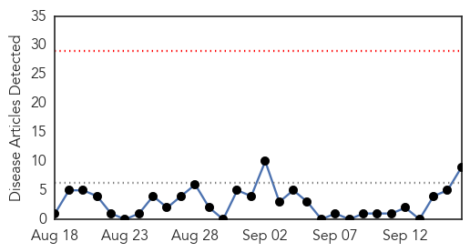
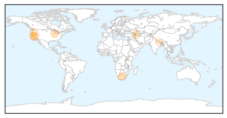
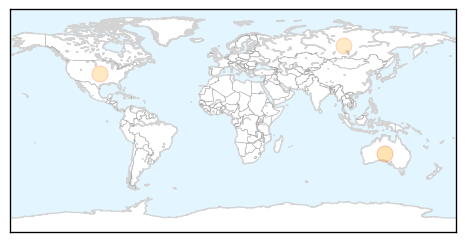

Hepatitis
30-Day Web Trend
0 alerts, 0 warnings

30-Day Twitter Trend
1 alerts, 0 warnings

Article Locations
Article Confidences

Top Articles:
- 0.901
- Recommended vaccinations for South Africa tripsTravel Press Release
- 0.871
- SIGNpost SIGNpost 00820
- 0.733
- San Luis Obispo and Santa Barbara Area News - Santa Barbara medical office allowed to reopen after shutdown fo
- 0.720
- Hepatitis infections decrease in Azerbaijan
- 0.680
- Researchers establish link between bovine leukemia virus and human breast cancer
- 0.578
- Virus in cattle linked to human breast cancer
- 0.577
- In Nepal, A Viral Epidemic Followed by Massive Earthquakes
- 0.556
- Virus in cattle linked to human breast cancer
- 0.555
- 20th Annual Infectious Disease Symposium
Top Tweets:
-
No tweets found for Sep 16, 2015
Influenza
30-Day Web Trend
3 alerts, 0 warnings
30-Day Twitter Trend
3 alerts, 0 warnings

Article Locations
Article Confidences

Top Articles:
Top Tweets:
-
No tweets found for Sep 16, 2015